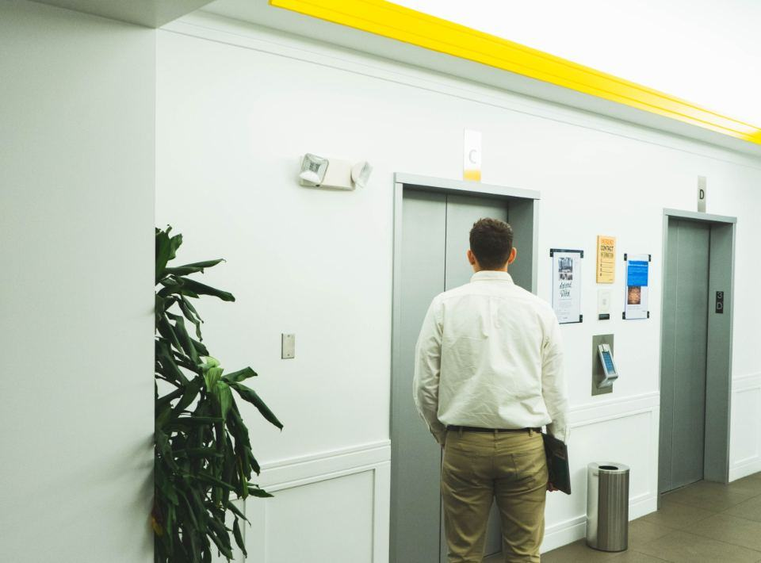
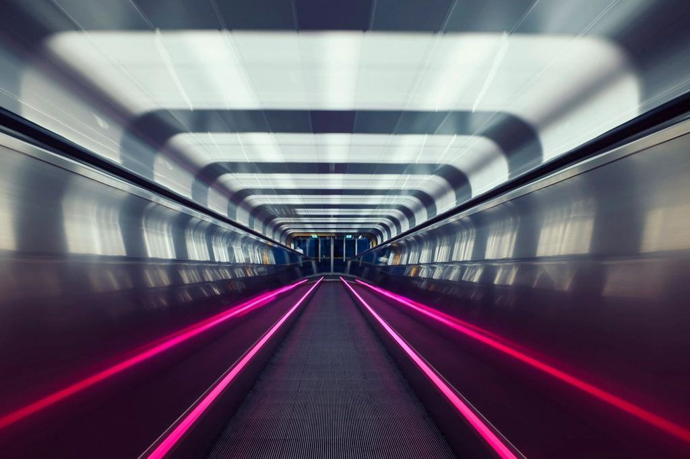
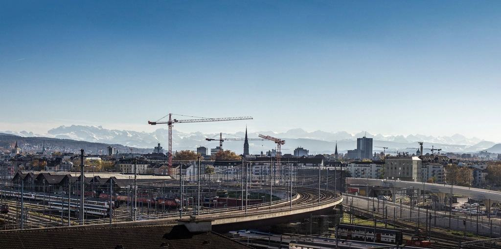
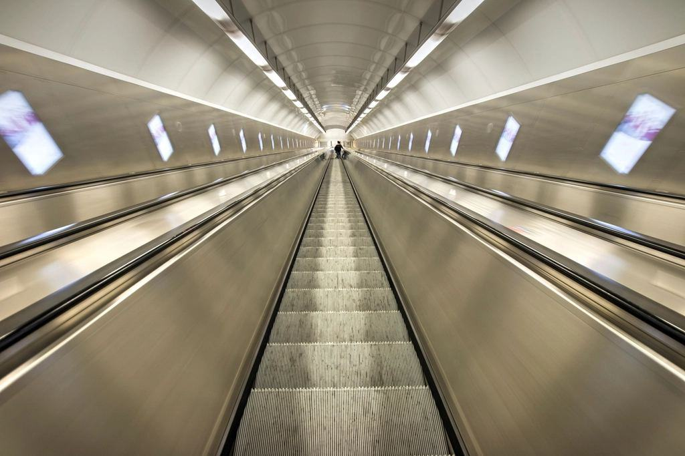

Tjänster
Varje bolag har kvar sitt kontor, sina tekniker och sina kunder. Det som är gemensamt är jourcentralen i Göteborg, centrallagret i Mölndal, inköpen och Kvadrantportalen där fastighetsägare ser driftstatus, servicehistorik och besiktningsprotokoll för alla sina hissar.
Hur kan vi hjälpa er fastighet?

Service i stor skala
Vi har 4 800 hissar under avtal i Västsverige, från tvåvåningshissar i radhusområden till högbyggnader på Lindholmen. Varje hiss har en namngiven tekniker och en reserv som också känner den.
Fastighetsbolag med många objekt får en egen kundansvarig och en gemensam årsrapport för hela beståndet.

Digital drift
I Kvadrantportalen ser ni varje hiss med status, senaste servicebesök och öppna anmärkningar från besiktningen. Drygt 1 900 hissar har också sensorer som skickar larm vid dörrfel och upprepade stopp.
Portalen kan kopplas till ert fastighetssystem via API så att felanmälningar hamnar på rätt ställe.

Moderniseringsplaner
För fastighetsägare med många hissar gör vi en tioårsplan som fördelar moderniseringarna jämnt över åren. Det ger förutsägbara kostnader och färre akuta byten.
Planen bygger på besiktningsprotokoll, felstatistik och en inventering av varje hiss enligt SS-EN 81-80.

Nyproduktion
Vi levererar och monterar hissar till nya bostäder, kontor och vårdbyggnader, och tar över servicen när huset står klart. Vi är med i projekteringen från systemhandlingsskedet.
Under 2025 levererade vi 86 nya hissar och två rulltrappor.
Från inventering till tioårsplan
- 1

Inventering
Vi går igenom varje hiss i beståndet och lägger in skick, ålder och besiktningsstatus i portalen.
- 2

Avtal och plan
Ni väljer avtalsnivå och får en moderniseringsplan med kostnad per år.
- 3
Lokal tekniker
Det lokala bolaget tar över driften med namngiven tekniker och reserv.
- 4

Årlig genomgång
En gång per år går kundansvarig igenom statistik, kostnader och planen med er.
Certifierade i alla led
- ISO 9001 och ISO 14001Gemensamt ledningssystem för kvalitet och miljö i alla fyra bolagen.
- ISO 45001Certifierat arbetsmiljöarbete med årlig revision på varje kontor.
- ISO 27001Kvadrantportalen och sensordatan hanteras enligt certifierad informationssäkerhet.
- ElsäkerhetsverketSamtliga bolag är registrerade elinstallationsföretag med egen elsäkerhetsansvarig.